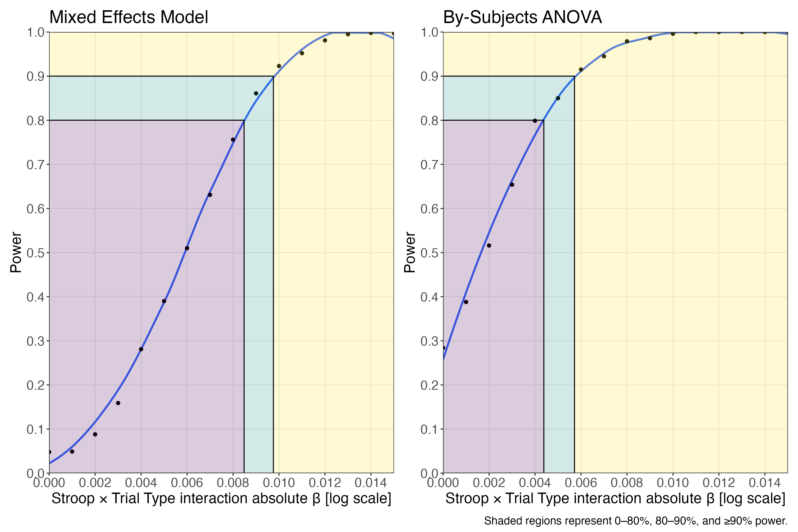
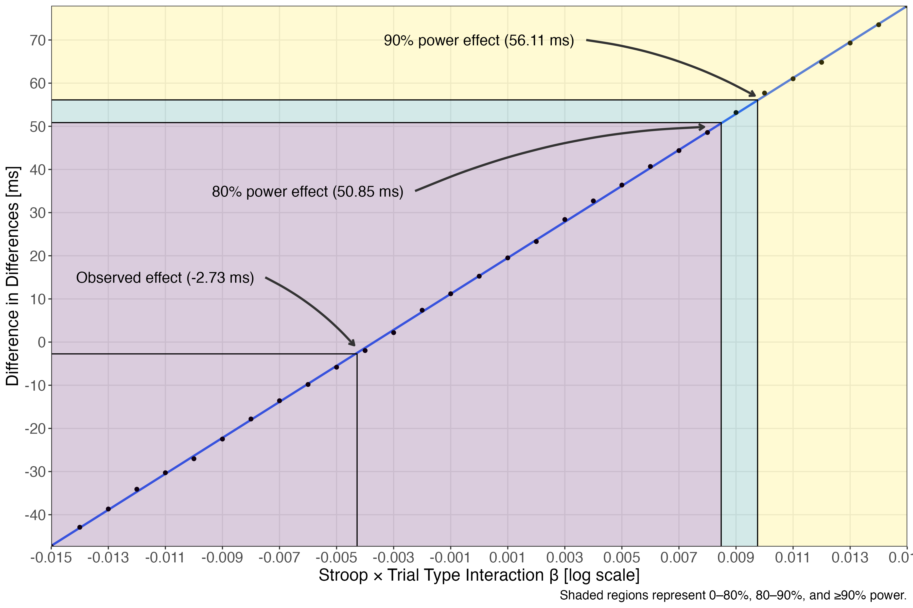

# load libraries
library(tidyverse)
library(here)
library(afex)
library(broom.mixed)
library(faux)
library(emmeans)
library(patchwork)
library(kableExtra)
# load useful functions
list.files(here("R", "00_load-functions"), full.names = TRUE) |>
purrr::walk(source)
# set analysis options
set.seed(1892) # for reproducibility
afex_options("include_aov" = TRUE) # for ANOVA
emm_options(lmer.df = "asymptotic") # df calculation; z-to-tSensitivity Analysis for the Chinese-English Stroop Study
Load libraries
Parameter Estimates
In Experiment 3 (Chinese-English bilinguals), we found no two-way interaction between Stroop and Trial Type. Here, the parameter estimate was negative and small. Using this model as a baseline, we will keep all parameter estimates fixed as in Study 3, but vary the effect size of the two-way interaction to determine:
- The size of parameter estimates we can reliably detect with 80% and 90% power with both mixed effects model and by-subjects ANOVA analyses in terms of betas in log space.
- The size of parameter estimates we can reliably detect with 80% and 90% power with both mixed effects model and by-subjects ANOVA analyses in terms of millisecond differences in language switch costs between Stroop neutral and incongruent trials.
mod <- read_rds(here(
"04_analysis",
"03_models",
"01_frequentist",
"01_rt_mixed",
"chinese_stroop_rt.rds"
))
mod_updated <- update(ref_grid(mod$full_model), tran = "log")
mod$full_model |>
broom.mixed::tidy() |>
mutate_if(is.numeric, round, 2) |>
kable()| effect | group | term | estimate | std.error | statistic | df | p.value |
|---|---|---|---|---|---|---|---|
| fixed | NA | (Intercept) | 6.95 | 0.02 | 338.02 | 52.56 | 0.00 |
| fixed | NA | stroop1 | 0.09 | 0.01 | 10.74 | 48.26 | 0.00 |
| fixed | NA | language1 | -0.02 | 0.01 | -2.19 | 44.86 | 0.03 |
| fixed | NA | trial_type1 | 0.04 | 0.00 | 9.67 | 28.77 | 0.00 |
| fixed | NA | stroop1:language1 | 0.01 | 0.01 | 1.53 | 26.46 | 0.14 |
| fixed | NA | stroop1:trial_type1 | 0.00 | 0.00 | -1.06 | 24.83 | 0.30 |
| fixed | NA | language1:trial_type1 | 0.02 | 0.00 | 3.75 | 24.48 | 0.00 |
| fixed | NA | stroop1:language1:trial_type1 | 0.00 | 0.00 | 0.32 | 25.60 | 0.75 |
| ran_pars | subject_id | sd__(Intercept) | 0.13 | NA | NA | NA | NA |
| ran_pars | subject_id.1 | sd__re1.stroop1 | 0.03 | NA | NA | NA | NA |
| ran_pars | subject_id.2 | sd__re1.language1 | 0.03 | NA | NA | NA | NA |
| ran_pars | subject_id.3 | sd__re1.trial_type1 | 0.01 | NA | NA | NA | NA |
| ran_pars | subject_id.4 | sd__re1.stroop1_by_language1 | 0.01 | NA | NA | NA | NA |
| ran_pars | subject_id.5 | sd__re1.stroop1_by_trial_type1 | 0.01 | NA | NA | NA | NA |
| ran_pars | subject_id.6 | sd__re1.language1_by_trial_type1 | 0.01 | NA | NA | NA | NA |
| ran_pars | word_colour | sd__(Intercept) | 0.03 | NA | NA | NA | NA |
| ran_pars | word_colour | cor__(Intercept).re2.trial_type1 | 0.51 | NA | NA | NA | NA |
| ran_pars | word_colour | sd__re2.trial_type1 | 0.02 | NA | NA | NA | NA |
| ran_pars | Residual | sd__Observation | 0.22 | NA | NA | NA | NA |
Simulation
The data simulation is adapted from code presented in L. M. DeBruine & Barr (2021) and relies primarily upon functionality in the L. DeBruine et al. (2021) R-package.
We model items as unique combinations of words and colours.
Data simulation is for a design with a 2x2x2 design where:
stroop[neutral, incongruent] is within subjects and between items.language[English, Chinese] is within subjects and between items.trial_type[Repetition, Switch] is within subjects and within items.
Simulate items
There are 15 unique trials for each combination of language and Stroop block.
sim_items <- function(
n_english_neutral = 15, # number of unique english neutral items
n_english_incongruent = 15,
n_other_neutral = 15,
n_other_incongruent = 15,
item_0 = 0.0319, # by-item random intercept sd
item_t = 0.0159, # by-item random slope for trial_type
item_rho = 0.51 # by-item random effect correlation
) {
faux::rnorm_multi(
n = n_english_neutral + n_english_incongruent + n_other_neutral + n_other_incongruent,
mu = 0,
sd = c(item_0, item_t),
r = item_rho,
varnames = c("I_0", "I_t")
) |>
mutate(
item_id = faux::make_id(
n_english_neutral +
n_english_incongruent +
n_other_neutral +
n_other_incongruent,
"I"
),
language = rep(
c("english", "other", "english", "other"),
c(n_english_neutral,
n_other_incongruent,
n_english_incongruent,
n_other_neutral
)
)
) |>
mutate(
item_id = faux::make_id(
n_english_neutral +
n_english_incongruent +
n_other_neutral +
n_other_incongruent,
"I"
),
stroop = rep(
c("neutral", "incongruent", "incongruent", "neutral"),
c(n_english_neutral,
n_other_incongruent,
n_english_incongruent,
n_other_neutral
)
)
)
}Items are replicated 4 times per person as participants saw the same item 4 times in the original study.
sim_item_replicates <- function(n_replicates = 4, ...) {
# with only 4 observations estimating subj_id:item_id effects is not realistic
# thus we assume each observation is independent
all_items <- vector(mode = "list", length = n_replicates)
for(i in 1:n_replicates) {
all_items[[i]] <- sim_items(...)
all_items[[i]]$replicate <- i
}
reduce(all_items, bind_rows)
}Simulate Subjects
There are 46 participants in the study. All random effects are fixed to the same values in the original study.
sim_subjects <- function(
n_subj = 46, # number of subjects
# random effects
subj_0 = 0.132, # by-subject random intercept sd
subj_s = 0.0329, # by-subject random slope sd for stroop
subj_l = 0.0294, # by-subject random slope sd for language
subj_t = 0.0101, # by-subject random slope sd for trial_type
subj_sl = 0.00716, # by-subject random slope sd for stroop:language
subj_st = 0.00557, # by-subject random slope sd for stroop:trial_type
subj_lt = 0.00534, # by-subject random slope sd for language:trial_type
subj_rho = 0 # by-subject random effect correlation (none estimated here)
) {
faux::rnorm_multi(
n = n_subj,
mu = 0,
sd = c(subj_0, subj_s, subj_l, subj_t, subj_sl, subj_st, subj_lt),
r = subj_rho,
varnames = c("S_0", "S_s", "S_l", "S_t", "S_sl", "S_st", "S_lt")
) %>%
mutate(subj_id = faux::make_id(nrow(.), "S"))
}Simulate Data
We combine the two functions and set factor codings to be the same as in the original analysis so that parameter estimates have the same interpretation. Numeric versions of the factors are created to make later calculations involving the factors easier.
sim_data <- function(
# fixed effects
beta_0 = 6.945, # intercept; the grand mean
beta_s = 0.0875, # slope; effect of stroop
beta_l = -0.0171, # slope; effect of language
beta_t = 0.0410, # slope; effect of trial_type
beta_sl = 0.0101, # slope; effect of stroop:language
beta_st = -0.00428, # slope; effect of stroop:trial_type
beta_lt = 0.0152, # slope; effect of language:trial_type
beta_slt = 0.00127, # slope; effect of stroop:language:trial_type
# residual error SD
sigma = 0.220,
rep = 1, # counter
...
) {
items <- sim_item_replicates(...)
subjects <- sim_subjects(...)
# simulate trials
all_trials <- crossing(
subjects,
items,
trial_type = factor(c("repetition", "switch"), ordered = TRUE)
) %>%
mutate(
stroop = factor(
stroop,
levels = c("incongruent", "neutral")
),
language = factor(
language,
levels = c("other", "english")
),
trial_type = factor(
trial_type,
levels = c("switch", "repetition")
)
)
# recode variables for use in the final model
# note that this is dependent upon the orde of levels above
contrasts(all_trials$stroop) <- contr.sum(2) # needs neutral -1
contrasts(all_trials$language) <- contr.sum(2) # needs english - 1
contrasts(all_trials$trial_type) <- contr.sum(2) # needs repetition -1
# create numeric variables for simulation of responses
# note you must ensure these match the contrasts used above
all_trials <- all_trials %>%
mutate(
stroop_num = case_when(
stroop == "incongruent" ~ 1,
stroop == "neutral" ~ -1
),
language_num = case_when(
language == "other" ~ 1,
language == "english" ~ -1
),
trial_type_num = case_when(
trial_type == "switch" ~ 1,
trial_type == "repetition" ~ -1
)
)
# make responses
all_trials %>%
mutate(
# add together fixed and random effects for each effect
B_0 = beta_0 + S_0 + I_0, # intercept
B_s = beta_s + S_s, # stroop
B_l = beta_l + S_l, # language
B_t = beta_t + S_t + I_t, # trial_type
B_sl = beta_sl + S_sl, # stroop:language
B_st = beta_st + S_st, # stroop:trial_type
B_lt = beta_lt + S_lt, # language:trial_type
# no more random effects estimated for remaining parameters
B_slt = beta_slt,
# generate the error term for subjects and items
e_si = rnorm(nrow(.), mean = 0, sd = sigma),
# calculate log RT by adding each effect term
# multiplied by the relevant sum-coded factor(s)
log_rt =
B_0 +
(B_s * stroop_num) +
(B_l * language_num) +
(B_t * trial_type_num) +
(B_sl * stroop_num * language_num) +
(B_st * stroop_num * trial_type_num) +
(B_lt * language_num * trial_type_num) +
(B_slt * stroop_num * language_num * trial_type_num) +
e_si,
rt = exp(log_rt)
) %>%
select(
subj_id,
item_id,
stroop,
stroop_num,
language,
language_num,
trial_type,
trial_type_num,
log_rt,
rt
)
}Simulate Missingness
The simulation functions assumes that we keep every observation in the study. For various reasons, such as excessively fast or slow response times or due to technical difficulties this is never the case. So, we determine the proportion of trials we lost in the original study and remove the same number of trials from our simulated data sets.
study_n <- read_csv(here(
"01_data",
"03_filtered",
"data_rt.csv"
)) |>
filter(study == "chinese_stroop") |>
drop_na(log_rt) |>
nrow()
data_sim_n <- nrow(sim_data())
prop_missing <- 1 - study_n/data_sim_nWe have 65.17% of the potential total number of trials in the final data set. We will use this as the benchmark for missing data in the final study.
Core Function
Here we bring together all of the functions to allow for simulation. We incorporate model fitting using the same fixed and random effects structure as in the original analysis, we calculate estimated marginal means and pairwise tests, and we conduct ANOVA analyses based on the simulated data aggregated by subjects.
# set up the power function
single_run <- function(filenames = NULL, ...) {
# ... is a shortcut that forwards any arguments to sim_data()
dat <- sim_data(...) %>%
messy(log_rt, prop = prop_missing) %>%
drop_na()
# run afex::mixed and capture any warnings ----
ww <- ""
suppressMessages(suppressWarnings(
mod <- mixed(
log_rt ~ stroop * language * trial_type +
(1 + stroop + language + trial_type + stroop:language + stroop:trial_type + trial_type:language || subj_id) +
(1 + trial_type | item_id),
data = dat,
expand_re = TRUE,
check_contrasts = FALSE,
control = lmerControl(optimizer = "bobyqa", optCtrl = list(maxfun = 1e5)),
progress = FALSE
)
))
# make emmeans ----
# update model reference grid for emmeans
# (make it know the outcome is log-transformed)
mod_updated <- update(ref_grid(mod$full_model), tran = "log")
# two-way interaction of interest
emmeans_two_way <- suppressMessages(emmeans(
mod_updated,
~trial_type|stroop, # trial type effects within stroop block
type = "response",
lmer.df = "asymptotic"
))
emmean_pairs_two_way <- pairs(emmeans_two_way)
emmean_pairs_diffs_two_way <- pairs(emmean_pairs_two_way, by = NULL)
# get output: ANOVA, parameter estimates, emmeans, and pairwise tests ----
# aggregate data for by-subjects ANOVA ----
dat_agg <- dat |>
group_by(subj_id, language, stroop, trial_type) |>
summarise(mean_rt = mean(rt, na.rm = TRUE), .groups = "drop") |>
pivot_wider(names_from = trial_type, values_from = mean_rt) |>
mutate(switch_cost_rt = switch - repetition)
agg_anova <- afex::aov_4(
switch_cost_rt ~ stroop*language + (1 + stroop * language | subj_id),
data = dat_agg
)
# add parameters to all outputs ----
# get results table
param_est <- broom.mixed::tidy(mod$full_model) |>
mutate(warnings = ww)
# make non-tibble outputs tibbles
emmeans_two_way <- as_tibble(emmeans_two_way)
emmean_pairs_two_way <- as_tibble(emmean_pairs_two_way)
emmean_pairs_diffs_two_way <- as_tibble(emmean_pairs_diffs_two_way)
agg_anova_tibble <- as_tibble(agg_anova$anova_table, rownames = "term")
# add columns for the specified parameters
params <- list(...)
for (name in names(params)) {
param_est[name] <- params[name]
emmeans_two_way[name] <- params[name]
emmean_pairs_two_way[name] <- params[name]
emmean_pairs_diffs_two_way[name] <- params[name]
agg_anova_tibble[name] <- params[name]
}
# put results in a list for the output ----
results <- list(
# capture issues with the model fit if present
#mixed_anova_results = as_tibble(rownames_to_column(anova(sim_mod), var = "term")),
parameter_results = param_est,
emmean_two_way = emmeans_two_way,
emmean_pairs_two_way = emmean_pairs_two_way,
emmean_pairs_diffs_two_way = emmean_pairs_diffs_two_way,
agg_anova = agg_anova_tibble
)
# save output ----
#results <- map(results, cbind, rep = rep)
# append the results to files if filename is set
if (!all(is.null(filenames))) {
for(i in seq_along(results)) {
append <- file.exists(filenames[[i]])
write_csv(
results[[i]],
filenames[[i]],
append = append
)
}
}
# return the tidied results in a list ----
results
}Sensitivity Analysis
We conducted 1000 simulations for every effect size ranging from absolute values of 0 to 0.015 in terms of the beta for the log reaction times for the interaction. All other parameters are set to the values reported in Study 3.
# define the folder to save files and the file names
filename_start <- here("04_analysis", "07_simulations")
filename_ending <- c(
"parameter_results",
"emmean_two_way",
"emmean_pairs_two_way",
"emmean_pairs_diffs_two_way",
"agg_anova"
)
# combine the two to give paths for saving
filenames <- here(filename_start, paste0(filename_ending, ".csv"))
nreps <- 1000
# set params
params <- crossing(
rep = 1:nreps, # repeats each combo nreps times
beta_0 = 6.945, # intercept; the grand mean
beta_s = 0.0875, # slope; effect of stroop
beta_l = -0.0171, # slope; effect of language
beta_t = 0.0410, # slope; effect of trial_type
beta_sl = 0.0101, # slope; effect of stroop:language
beta_st = seq(0, 0.015, by = 0.001), # stroop:trial_type [VARIES]
beta_lt = 0.0152, # slope; effect of language:trial_type
beta_slt = 0.00127, # slope; effect of stroop:language:trial_type
# residual standard deviation
sigma = 0.220
)
if (!all(file.exists(filenames))) {
# run a simulation for each row of params
# and save to a file on each rep
sims <- purrr::pmap(
params,
single_run,
filenames = filenames,
.progress = TRUE
)
}The data are loaded from file to avoid recomputing all of the simulations.
files <- list.files(here("04_analysis", "07_simulations"), full.names = TRUE)
file_names <- str_replace(list.files(here("04_analysis", "07_simulations")), ".csv", "")
results <- map(files, read_csv)
names(results) <- file_namesWe define a number of functions that allow us to conduct the sensitivity analysis. This involves gathering the simulations which contain information on the interaction beta and whether the interaction was significant in the model. This is then fitted using Loess regression, allowing for a non-linear relationship between the interaction beta and power. We can then define a grid of betas that allow us to interpolate and determine power for betas that were not sampled, including the exact beta observed in Study 3.
get_power_predictions <- function(.data, .formula = as.formula(power ~ beta_st)) {
mod <- loess(.formula, .data, control = loess.control(surface = "direct"))
preds <- data.frame(beta_st = seq(0, 0.015, length.out = 1e4))
preds$power <- predict(mod, newdata = preds$beta_st)
preds |>
mutate(
power_group = cut(
power,
breaks = c(-Inf, 0.8, 0.9, Inf),
labels = c("low", "medium", "high")
)
) |>
group_by(power_group) |>
filter(power == min(power))
}
make_power_rectangles <- function(.preds) {
beta_80_90 <- min(.preds$beta_st[.preds$power > .8])
beta_90_100 <- min(.preds$beta_st[.preds$power > .9])
power_80_90 <- min(.preds$power[.preds$power > .8])
power_90_100 <- min(.preds$power[.preds$power > .9])
shades_1 <- data.frame(
x_start = c(
-Inf,
beta_80_90,
beta_90_100
),
x_end = c(
beta_80_90,
beta_90_100,
Inf
),
y_start = c(-Inf, -Inf, -Inf),
y_end = c(
power_80_90,
power_90_100,
Inf
),
fill = c("low", "medium", "high")
)
shades_2 <- data.frame(
x_start = c(-Inf, -Inf, -Inf),
x_end = c(
-Inf,
beta_80_90,
beta_90_100
),
y_start = c(
-Inf,
power_80_90,
power_90_100
),
y_end = c(
-Inf,
power_90_100,
Inf
),
fill = c("low", "medium", "high")
)
lines <- data.frame(
x_start = c(-Inf, -Inf, -Inf),
x_end = c(beta_80_90, beta_90_100, Inf),
y_start = c(-Inf, -Inf, -Inf),
y_end = c(power_80_90, power_90_100, Inf)
)
shades_1$fill <- ordered(shades_1$fill, levels = c("low", "medium", "high"))
shades_2$fill <- ordered(shades_2$fill, levels = c("low", "medium", "high"))
list(
shades_1 = shades_1,
shades_2 = shades_2,
lines = lines
)
}
geom_fill_rect <- function(.rect_list, .alpha = .2) {
list(
geom_rect(
data = .rect_list$shades_1,
aes(xmin = x_start, ymin = y_start, xmax = x_end, ymax = y_end, fill = fill),
alpha = .alpha,
inherit.aes = FALSE
),
geom_rect(
data = .rect_list$shades_2,
aes(xmin = x_start, ymin = y_start, xmax = x_end, ymax = y_end, fill = fill),
alpha = .alpha,
inherit.aes = FALSE
),
geom_rect(
data = .rect_list$lines,
aes(xmin = x_start, ymin = y_start, xmax = x_end, ymax = y_end),
inherit.aes = FALSE,
fill = NA,
colour = "black"
)
)
}
make_power_plot <- function(.summary, title = "Power for designs varying in effect size") {
.summary |>
ggplot(aes(x = beta_st, y = power)) +
geom_smooth(se = FALSE, method = "loess", formula = y ~ x) +
scale_x_continuous(
breaks = seq(0, 0.018, by = 0.002),
expand = c(0, 0)
) +
geom_point() +
scale_y_continuous(
breaks = seq(0, 1, by = .10),
limits = c(0, 1),
expand = c(0, 0)
) +
geom_fill_rect(make_power_rectangles(get_power_predictions(.summary))) +
scale_fill_viridis_d() +
theme_bw() +
theme(
panel.grid.minor = element_blank(),
legend.position = "none",
title = element_text(size = 16),
axis.text = element_text(size = 14),
axis.title = element_text(size = 16)
) +
labs(
x = "Stroop × Trial Type interaction absolute β [log scale]",
y = "Power",
title = title
)
}We extract the parameter estiamtes from the original model and define our grid here before getting the predictions and plotting the findings.
# set alpha threshold for significant effects
alpha <- 0.05
# determine power based on simulations for the mixed effects model
power_lme <- results$parameter_results |>
filter(effect == "fixed", term == "stroop1:trial_type1") |>
group_by(term, beta_st) |>
summarise(
mean_estimate = mean(estimate),
mean_se = mean(std.error),
power = mean(p.value < alpha),
.groups = "drop"
)
write_csv(
power_lme,
here("04_analysis", "08_simulation-summary", "power_lme.csv")
)
# use the loess smooth to interpolate values between estimated effects
# for the interaction to determine approximate 80% and 90% cutoffs
power_lme_predictions <- get_power_predictions(power_lme)
write_csv(
power_lme_predictions,
here("04_analysis", "08_simulation-summary", "power_lme_predictions.csv")
)
# determine joint significance of both the mixed effects model and pairwise test
# only count p-values as significant if BOTH are significant
power_two_way_diffs <-
left_join(
results$emmean_pairs_diffs_two_way |>
select(contrast, beta_st, p.value, rep) |>
rename(p_value_pair = p.value),
results$parameter_results |>
filter(effect == "fixed", term == "stroop1:trial_type1") |>
select(term, beta_st, p.value, rep) |>
rename(p_value_lme = p.value),
by = c("beta_st", "rep")
) |>
mutate(
p_value_joint = case_when(
p_value_lme < .05 & p_value_pair < .05 ~ 0,
TRUE ~ 1
)
) |>
group_by(beta_st) |>
summarise(power = mean(p_value_joint < alpha), .groups = "drop")
# again interpolate estimates
power_two_way_predictions <- get_power_predictions(power_two_way_diffs)
write_csv(
power_two_way_predictions,
here("04_analysis", "08_simulation-summary", "power_two_way_predictions.csv")
)
# do the same for the ANOVA
power_anova <- results$agg_anova %>%
filter(term == "stroop") %>%
group_by(term, beta_st) %>%
summarise(power = mean(`Pr(>F)` < alpha), .groups = "drop")
write_csv(
power_anova,
here("04_analysis", "08_simulation-summary", "power_anova.csv")
)
power_anova_predictions <- get_power_predictions(power_anova)
write_csv(
power_anova_predictions,
here("04_analysis", "08_simulation-summary", "power_anova_predictions.csv")
)The design is sensitive to effect sizes of 0.0085 with 80% power and effect sizes of 0.0098 with 90% power. For the two-way interaction we additionally explored the power for cases where both the mixed effects model returned a significant two-way interaction and the pairwise tests of the differences-in-differences (i.e. of a significant difference in the switch costs between Stroop neutral and incongruent trials) was significant simultaneously. This also showed the design to be sensitive to effect sizes of 0.0085 with 80% power and effect sizes of 0.0098 with 90% power. Finally, analyses aggregated by participant using the same ANOVA method detailed in Liu et al. (2020) showed the design to be sensitive to effect sizes of 0.0044 with 80% power and effect sizes of 0.0057 with 90% power. This increased sensitivity is likely caused by an increased Type-I error rate due to aggregation whereby crossed by-subjects and by-items effects aren’t taken into account. Indeed, with an effect size of zero for the two-way interaction, 4.8% of the analyses are report a significant effect when analysed using a mixed effects model, which is within an acceptable range of the nominal alpha level of 5%. However, this Type-I error rate rises to 28.4% when analysing the data aggregated by subjects using an ANOVA. This is far beyond the nominal alpha level of 5%, showing this analytical method to be anti-conservative.
power_plot <- make_power_plot(power_lme, title = "Mixed Effects Model") +
make_power_plot(power_anova, title = "By-Subjects ANOVA") +
plot_annotation(
caption = "Shaded regions represent 0–80%, 80–90%, and ≥90% power.",
theme = theme(plot.caption = element_text(size = 12))
)
ggsave(
here("03_plots", "02_sensitivity-checks", "01_frequentist", "power_plot.png"),
power_plot,
width = 12,
height = 8
)Warning: Removed 10 rows containing missing values (`geom_smooth()`).Warning: Removed 21 rows containing missing values (`geom_smooth()`).knitr::include_graphics(here("03_plots", "02_sensitivity-checks", "01_frequentist", "power_plot.png"))
To determine the sensitivity of the design to both positive and negative parameter estimates we take the absolute values and invert the sign, joining this with the original simulations to get predictions for both positive and negative parameter estimates.
# get the parameter estimates from the mixed effects model simulations
separated_results <- results$parameter_results |>
filter(effect == "fixed") |>
select(term, estimate, rep, beta_st) |>
pivot_wider(names_from = term, values_from = estimate) |>
janitor::clean_names()
# invert the parameter estimates from the mixed effects model simulations for the interaction
negative_separated_results <- separated_results |>
filter(beta_st != 0) |>
mutate(
stroop1_trial_type1 = stroop1_trial_type1 * -1,
beta_st = beta_st * -1
)
# combine them
joined_results <- bind_rows(separated_results, negative_separated_results)We then use the model formulae, effects codes, and parameter estimates to create predictions for the log reaction times when both negative and positive parameter estimates are found for the interaction.
# estimates of betas
int <- joined_results$intercept
stroop <- joined_results$stroop1
language <- joined_results$language1
trial_type <- joined_results$trial_type1
stroop_language <- joined_results$stroop1_language1
stroop_trial_type <- joined_results$stroop1_trial_type1
language_trial_type <- joined_results$language1_trial_type1
stroop_language_trial_type <- joined_results$stroop1_language1_trial_type1
# effect coding of groups
# stroop
neutral <- -1
incongruent <- 1
# language
english <- -1
chinese <- 1
# trial type
repetition <- -1
switch <- 1
parameter_descriptives <- data.frame(
beta_st = joined_results$beta_st,
neutral_english_repetition = int + neutral*stroop + english*language + repetition*trial_type + neutral*english*stroop_language + neutral*repetition*stroop_trial_type + english*repetition*language_trial_type + neutral*english*repetition*stroop_language_trial_type,
incongruent_english_repetition = int + incongruent*stroop + english*language + repetition*trial_type + incongruent*english*stroop_language + incongruent*repetition*stroop_trial_type + english*repetition*language_trial_type + incongruent*english*repetition*stroop_language_trial_type,
neutral_chinese_repetition = int + neutral*stroop + chinese*language + repetition*trial_type + neutral*chinese*stroop_language + neutral*repetition*stroop_trial_type + chinese*repetition*language_trial_type + neutral*chinese*repetition*stroop_language_trial_type,
incongruent_chinese_repetition = int + incongruent*stroop + chinese*language + repetition*trial_type + incongruent*chinese*stroop_language + incongruent*repetition*stroop_trial_type + chinese*repetition*language_trial_type + incongruent*chinese*repetition*stroop_language_trial_type,
neutral_english_switch = int + neutral*stroop + english*language + switch*trial_type + neutral*english*stroop_language + neutral*switch*stroop_trial_type + english*switch*language_trial_type + neutral*english*switch*stroop_language_trial_type,
incongruent_english_switch = int + incongruent*stroop + english*language + switch*trial_type + incongruent*english*stroop_language + incongruent*switch*stroop_trial_type + english*switch*language_trial_type + incongruent*english*switch*stroop_language_trial_type,
neutral_chinese_switch = int + neutral*stroop + chinese*language + switch*trial_type + neutral*chinese*stroop_language + neutral*switch*stroop_trial_type + chinese*switch*language_trial_type + neutral*chinese*switch*stroop_language_trial_type,
incongruent_chinese_switch = int + incongruent*stroop + chinese*language + switch*trial_type + incongruent*chinese*stroop_language + incongruent*switch*stroop_trial_type + chinese*switch*language_trial_type + incongruent*chinese*switch*stroop_language_trial_type
) |>
pivot_longer(!beta_st, names_to = "condition", values_to = "log_rt") |>
mutate(rt = exp(log_rt)) |>
separate(condition, into = c("stroop", "language", "trial_type")) |>
group_by(beta_st, stroop, trial_type) |>
summarise(
mean_log_rt = mean(log_rt),
sd_log_rt = sd(log_rt),
mean_rt = mean(rt),
sd_rt = sd(rt),
.groups = "drop"
)We then make predictions for both the observed effect size and effect sizes found to have 80% and 90% power in the analysis above.
make_diff_predictions <- function(.data, .new_data, .formula = as.formula(diff_in_diff ~ beta_st)) {
mod <- loess(diff_in_diff ~ beta_st, .data, control = loess.control(surface = "direct"))
.new_data$diff_in_diff <- predict(mod, newdata = .new_data)
.new_data
}
make_diff_rectangles <- function(.preds) {
beta_observed <- .preds$beta_st[.preds$power_group == "observed"]
beta_80_90 <- .preds$beta_st[.preds$power_group == "medium"]
beta_90_100 <- .preds$beta_st[.preds$power_group == "high"]
diff_observed <- .preds$diff_in_diff[.preds$power_group == "observed"]
diff_80_90 <- .preds$diff_in_diff[.preds$power_group == "medium"]
diff_90_100 <- .preds$diff_in_diff[.preds$power_group == "high"]
shades_1 <- data.frame(
x_start = c(
-Inf,
beta_observed,
beta_80_90,
beta_90_100
),
x_end = c(
beta_observed,
beta_80_90,
beta_90_100,
Inf
),
y_start = c(-Inf, -Inf, -Inf, -Inf),
y_end = c(
diff_observed,
diff_80_90,
diff_90_100,
Inf
),
fill = c("low", "observed", "medium", "high")
)
shades_2 <- data.frame(
x_start = c(-Inf, -Inf, -Inf, -Inf),
x_end = c(
-Inf,
beta_observed,
beta_80_90,
beta_90_100
),
y_start = c(
-Inf,
diff_observed,
diff_80_90,
diff_90_100
),
y_end = c(
-Inf,
diff_80_90,
diff_90_100,
Inf
),
fill = c("low", "observed", "medium", "high")
)
lines <- data.frame(
x_start = c(-Inf, -Inf, -Inf, -Inf),
x_end = c(beta_observed, beta_80_90, beta_90_100, Inf),
y_start = c(-Inf, -Inf, -Inf, -Inf),
y_end = c(diff_observed, diff_80_90, diff_90_100, Inf)
)
shades_1$fill <- ordered(shades_1$fill, levels = c("low", "observed", "medium", "high"))
shades_2$fill <- ordered(shades_2$fill, levels = c("low", "observed", "medium", "high"))
list(
shades_1 = shades_1,
shades_2 = shades_2,
lines = lines
)
}
make_sensitivity_plot <- function(.data, .pred_data, title = "x") {
# get predictions
diff_preds <- make_diff_predictions(.data, .pred_data)
# get labels for the plot
diff_preds <- diff_preds |> filter(power_group != "low")
diff_preds <- arrange(diff_preds, power)
diff_preds$label <- c("80% power", "90% power", "Observed")
diff_preds$label <- paste0(diff_preds$label, " effect (", round(diff_preds$diff_in_diff, 2), " ms)")
diff_preds$label_x <- c(-.006, 0, -.011)
diff_preds$label_y <- c(35, 70, 15)
# get arrow locations for the plot
curves <- tibble(
x = c(-0.00225, 0.00375, -0.0075),
y = c(35, 70, 15),
xend = diff_preds$beta_st + c(-.0006, -.0001, -.0001),
yend = diff_preds$diff_in_diff + c(-1, 1, 2)
)
.data |>
ggplot(aes(x = beta_st, y = diff_in_diff)) +
geom_smooth(method = "lm", formula = y ~ x, se = FALSE) +
geom_point() +
scale_x_continuous(
breaks = round(seq(-0.015, 0.015, by = 0.002), 3),
expand = c(0, 0)
) +
scale_y_continuous(
breaks = seq(-100, 100, by = 10),
expand = c(0, 0)
) +
theme_bw() +
theme(
panel.grid.minor = element_blank(),
legend.position = "none",
axis.text = element_text(size = 14),
axis.title = element_text(size = 16),
plot.caption = element_text(size = 12)
) +
labs(
x = "Stroop × Trial Type Interaction β [log scale]",
y = "Difference in Differences [ms]"
) +
geom_fill_rect(make_diff_rectangles(make_diff_predictions(.data, .pred_data))) +
scale_fill_manual(values = c("#440154", "#440154", "#21918c", "#fde725")) +
annotate(
geom = "text",
x = diff_preds$label_x,
y = diff_preds$label_y,
label = diff_preds$label,
colour = "black",
size = 5
) +
geom_curve(
data = curves,
aes(
x = x,
y = y,
xend = xend,
yend = yend
),
arrow = arrow(length = unit(0.08, "inch")),
linewidth = 1,
color = "gray20",
curvature = -0.1
) +
labs(caption = "Shaded regions represent 0–80%, 80–90%, and ≥90% power.")
}These functions are then used to determine the difference in differences results in terms of reaction times across the range of negative and positive parameter estimates for the interaction.
# get difference in difference scores
diff_in_diff <- parameter_descriptives |>
select(-contains("log")) |>
pivot_wider(names_from = c(stroop, trial_type), values_from = c(mean_rt, sd_rt)) |>
mutate(
incongruent_diff = mean_rt_incongruent_switch - mean_rt_incongruent_repetition,
congruent_diff = mean_rt_neutral_switch - mean_rt_neutral_repetition
) |>
select(beta_st, contains("diff")) |>
mutate(diff_in_diff = incongruent_diff - congruent_diff)
# get observed beta in study 3
observed_beta <- mod$full_model |>
broom.mixed::tidy() |>
filter(effect == "fixed", term == "stroop1:trial_type1") |>
pull(estimate)
# get predictions from power analysis
diff_pred_data <- power_lme_predictions
# add observed beta to predictions from high power betas
diff_pred_data <- bind_rows(
diff_pred_data,
tibble(
beta_st = observed_beta,
power = NA,
power_group = "observed"
)
)
# get predictions
diff_preds <- make_diff_predictions(diff_in_diff, diff_pred_data)
write_csv(
diff_preds,
here("04_analysis", "08_simulation-summary", "diff_preds.csv")
)
# get the observed switch cost for later reporting
observed_switch_cost <- emmeans(mod_updated, ~trial_type|stroop, type = "response") |>
as_tibble() |>
select(trial_type:response) |>
pivot_wider(names_from = c(trial_type, stroop), values_from = response) |>
mutate(
cost_incongruent = Switch_Incongruent - Repetition_Incongruent,
cost_neutral = Switch_Neutral - Repetition_Neutral,
switch_cost = cost_neutral - cost_incongruent
) |>
pull(switch_cost) |>
round(2)
write_csv(
observed_switch_cost |> as_tibble() |> rename(ms = value),
here("04_analysis", "08_simulation-summary", "observed_switch_cost.csv")
)# make the plot
sensitivity_plot <- make_sensitivity_plot(diff_in_diff, diff_pred_data)
ggsave(
here("03_plots", "02_sensitivity-checks", "01_frequentist", "sensitivity_plot.png"),
sensitivity_plot,
width = 12,
height = 8
)
knitr::include_graphics(here("03_plots", "02_sensitivity-checks", "01_frequentist", "sensitivity_plot.png"))
In the original analysis we found a beta of -0.0043 for the Stroop × Trial Type Interaction. This is associated with a predicted language switch cost difference between the neutral and incongruent Stroop trials of -2.73ms from our simulations and an observed switch cost of 2.93ms. Our design is sensitive to switch costs of 50.85 with 80% power and 56.11 with 90% power; both relatively small differences in language switch costs between the Stroop conditions. Thus, it is likely that the we did not observe a significant effect (and found evidence in support of a null result in Bayesian anlyses) because the effect is likely practically zero.
References
DeBruine, L. M., & Barr, D. J. (2021). Understanding mixed-effects models through data simulation. Advances in Methods and Practices in Psychological Science, 4(1), 2515245920965119.
DeBruine, L., Krystalli, A., & Heiss, A. (2021). Faux: Simulation for factorial designs. Zenodo. https://doi.org/10.5281/zenodo.